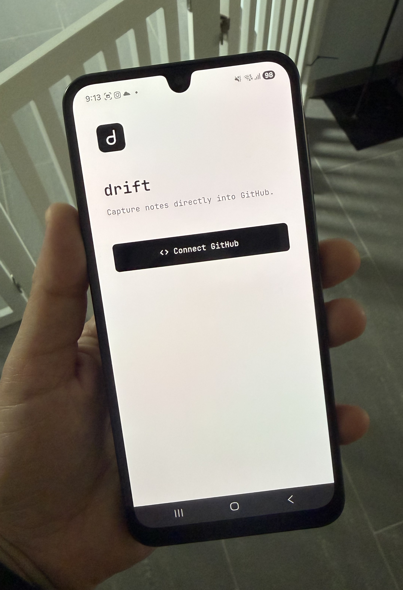

Update
Drift mobile is starting to take shape!

It's slowly starting to feel like a real app instead of a collection of ideas.
Small steps.
Drift
A small development update as Drift mobile starts feeling like a real app instead of a collection of ideas.
Drift mobile is starting to take shape!

It's slowly starting to feel like a real app instead of a collection of ideas.
Small steps.